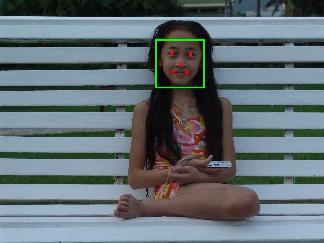
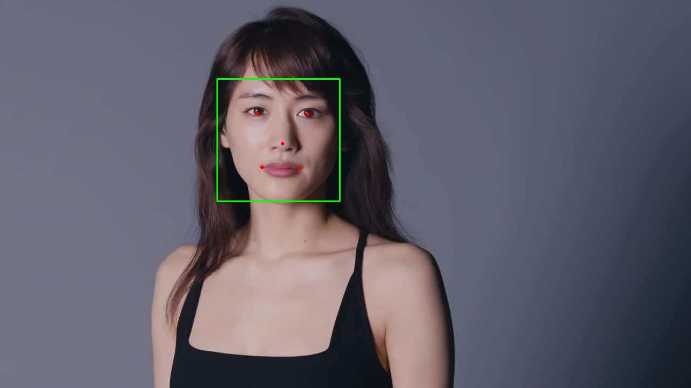
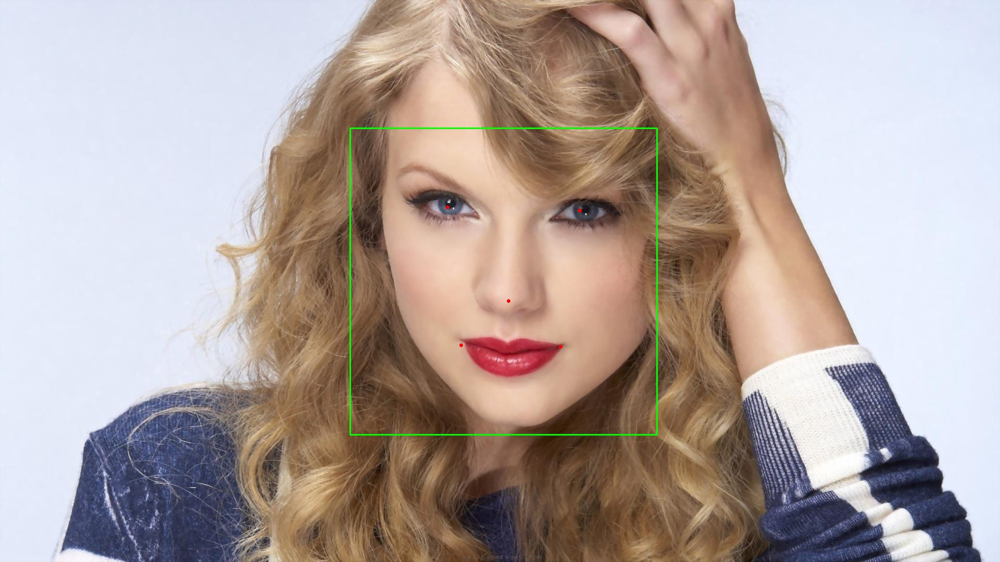

人脸检测V1.0(TrialFaceSDK)
能力介绍
接口能力
- 人脸检测: 检测图片中人脸，并计算出人脸概率、人脸角度、关键点（眼、鼻、嘴）位置等信息
依赖项
- CPU: MSVCP140、VCRUNTIME140
调用方式
示例代码一
1
2
3
4
5
6
7
8
9
10
11
12
13
14
15
16
17
18
19
20
21
22
23
24
using namespace glasssix;
using namespace glasssix::longinus;
int main()
{
//do not support GPU in TrialFaceSDK
int device = -1;//using CPU when device is less than zero, otherwise use the GPU numbered by 'device', device is set to -1 by default.
LonginusDetector detector;
detector.set(FRONTALVIEW, device);
cv::Mat img = cv::imread("../TestImage/2.png");
cv::Mat gray;
cv::cvtColor(img, gray, CV_BGR2GRAY);
std::vector<FaceRect> rects = detector.detect(gray.data, gray.cols, gray.rows, gray.step[0], 24, 1.1f, 3, false, false);
for (int i = 0; i < rects.size(); i++)
cv::rectangle(img, cv::Rect(rects[i].x, rects[i].y, rects[i].width, rects[i].height), cv::Scalar(0, 255, 0));
cv::imshow("hehe", img);
cv::waitKey(0);
return 0;
}RomanciaDetector类说明
成员函数
功能: 设置检测方式void set(DetectionType detectionType, int device);
| 参数 | 参数类型 | 值 | 说明 | 备注 |
|---|---|---|---|---|
| detectionType | enum DetectionType | FRONTALVIEW FRONTALVIEW_REINFORCE MULTIVIEW MULTIVIEW_REINFORCE |
正脸快速检测 正脸加强检测 多角度检测 多角度加强检测 |
检测效果依次变强 检测速度依次变慢 |
| device | int | <0>=0 |
使用cpu 使用设备号为device的gpu |
成员函数void load(std::vector<std::string> cascades, int device = -1);
功能: 加载分类器模型
| 参数 | 参数类型 | 值 | 说明 | 备注 |
|---|---|---|---|---|
| cascades | std::vector<std::string> |
用户输入 | vector中每个元素对应一个模型文件路径 | xml形式模型文件 |
| device | int | <0>=0 |
使用cpu 使用设备号为device的gpu |
成员函数std::vector<FaceRect> detect(unsigned char *gray, int width, int height, int step, int minSize, float scale, int min_neighbors, bool useMultiThreads = false, bool doEarlyReject = false);
功能: 对输入灰度图做人脸检测并标定人脸位置
| 参数 | 参数类型 | 值 | 说明 | 备注 |
|---|---|---|---|---|
| gray | unsigned char * |
用户输入 | 灰度图数据地址 | 需连续存储 |
| width | int | 用户输入 | 灰度图宽 | |
| height | int | 用户输入 | 灰度图高 | |
| step | int | 用户输入 | 灰度图每一行像素所占字节数 | |
| minSize | int | 有效值>=24 |
最小检测窗 | 检出的人脸区域>=minSize |
| scale | float | >1 |
图像检测缩放比例 | 一般设置大>1.1 |
| min_neighbors | int | >=0 |
人脸区域附近候选框个数 | 一般设置3 |
| useMultiThreads | bool | true false |
使用多线程 使用单线程 |
仅对使用cpu工作时有效, 默认值false |
| doEarlyReject | bool | true false |
采取早期拒绝 不采取早期拒绝 |
设置true时可提高检测速度，但检测效果下降，设置false则相反, 默认值false |
- 返回值
std::vector<FaceRect>类型, vector中包含了每一个检测到的人脸区域信息
FaceRect类型说明
| 成员变量 | 类型 | 说明 | 备注 |
|---|---|---|---|
| x | int | 人脸区域左上角x坐标 | |
| y | int | 人脸区域左上角y坐标 | |
| width | int | 人脸区域宽度 | |
| height | int | 人脸区域高度 | |
| neighbors | int | 人脸区域候选框个数 | 一般作为得分的判断 |
| confidence | double | 人脸区域置信度 | 一般不作为得分的判断 |
示例代码二
1 |
|
成员函数std::vector<FaceRectwithFaceInfo> detect(unsigned char *gray, int width, int height, int step, int minSize, float scale, int min_neighbors, int order = 0, bool useMultiThreads = false, bool doEarlyReject = false);
功能: 对输入灰度图做人脸检测并标定人脸位置
| 参数 | 参数类型 | 值 | 说明 | 备注 |
|---|---|---|---|---|
| gray | unsigned char * |
用户输入 | 灰度图数据地址 | 需连续存储 |
| width | int | 用户输入 | 灰度图宽 | |
| height | int | 用户输入 | 灰度图高 | |
| step | int | 用户输入 | 灰度图每一行像素所占字节数 | |
| minSize | int | 有效值>=24 |
最小检测窗 | 检出的人脸区域>=minSize |
| scale | float | >1 |
图像检测缩放比例 | 一般设置大>1.1 |
| min_neighbors | int | >=0 |
人脸区域附近候选框个数 | 一般设置3 |
| order | int | 人脸数据的排列方式:NCHW/NHWC | order=0(NCHW),否则(NHWC) | |
| useMultiThreads | bool | true false |
使用多线程 使用单线程 |
仅对使用cpu工作时有效, 默认值false |
| doErlyReject | bool | true false |
采取早期拒绝 不采取早期拒绝 |
设置true时可提高检测速度，但检测效果下降，设置false则相反, 默认值false |
- 返回值
std::vector<FaceRectwithFaceInfo>类型, vector中包含了每一个检测到的人脸区域、关键点、人脸概率信息
成员函数void extract_faceinfo(std::vector<FaceRectwithFaceInfo> face_info, std::vector<std::vector<int>>& bboxes, std::vector<std::vector<int>>& landmarks);
功能: 提取出矩形人脸框和人脸关键点，存放至bboxes和landmarks
| 参数 | 参数类型 | 值 | 说明 | 备注 |
|---|---|---|---|---|
| face_info | std::vector<FaceRectwithFaceInfo> |
检测到的人脸信息 | ||
| bboxes | std::vector<std::vector<int>> |
bboxes.size():检测到的人脸个数，bboxes[i][0]:x，bboxes[i][1]:y，bboxes[i][2]:width，bboxes[i][3]:height | ||
| landmarks | std::vector<std::vector<int>> |
landmarks.size():检测到的人脸个数，landmarks[i][0]:x_lefteye，landmarks[i][1]:y_lefteye，landmarks[i][2]:x_righteye，landmarks[i][3]:y_righteye，landmarks[i][4]:x_nose，landmarks[i][5]:y_nose，landmarks[i][6]:x_leftmouse，landmarks[i][7]:y_leftnouse，landmarks[i][8]:x_rightmouth，landmarks[i][9]:y_rightmouth |
成员函数void extract_biggest_faceinfo(std::vector<FaceRectwithFaceInfo> face_info, std::vector<std::vector<int>>& bboxes, std::vector<std::vector<int>>& landmarks);
功能: 提取出面积最大人脸的矩形人脸框和人脸关键点，存放至bboxes和landmarks
| 参数 | 参数类型 | 值 | 说明 | 备注 |
|---|---|---|---|---|
| face_info | std::vector<FaceRectwithFaceInfo> |
检测到的人脸信息 | ||
| bboxes | std::vector<std::vector |
同extract_faceinfo | ||
| landmarks | std::vector<std::vector |
同extract_faceinfo |
成员函数std::vector<unsigned char> alignFace(const unsigned char* ori_image, int n, int channels, int height, int width, std::vector<std::vector<int>> bbox, std::vector<std::vector<int> >landmarks);
功能: 对齐人脸
| 参数 | 参数类型 | 值 | 说明 | 备注 |
|---|---|---|---|---|
| ori_image | const unsigned char* |
用于检测人脸的原始灰度图片 | ||
| n | int |
原始灰度图片张数，设为1 | ||
| channels | int |
原始灰度图片通道数 | ||
| height | int |
原始灰度图片高度 | ||
| width | int |
原始灰度图片宽度 | ||
| bbox | std::vector<std::vector<int>> |
同extract_faceinfo | ||
| landmarks | std::vector<std::vector<int>> |
同extract_faceinfo |
- 返回值
std::vector<unsigned char>, vector中包含了每一个对齐后的人脸灰度图像数据，通过OpenCV可显示
人脸匹配
能力介绍
接口能力
- 人脸匹配: 输入连续视频序列检测结果，匹配前后帧人脸是否属于同一个人。仅在摄像机机位不变的连续视频中有意义。
调用方式
示例代码三
1
2
3
4
5
6
7
8
9
10
11
12
13
14
15
16
17
18
19
20
21
22
23
24
25
26
27
28
29
30
31
32
33
34
35
36
37
38
39
40
41
42
43
44
45
46
47
48
49
50
51
52
53
54
55
56
57
58
using namespace glasssix;
using namespace glasssix::longinus;
int main(int argc, char** argv)
{
cv::Mat frame;
cv::Mat gray;
int frame_extract_frequency = 5; // frequency of extracting one frame
cv::VideoCapture capture("..\\data\\group.mp4");
if (!capture.isOpened())
{
std::cout << "Reading Video Failed !" << std::endl;
getchar();
return 0;
}
int frame_num = capture.get(cv::CAP_PROP_FRAME_COUNT);
int device = -1;
LonginusDetector detector;
detector.set(MULTIVIEW_REINFORCE, device);
// loop through every frame in the video
for (int i = 0; i < frame_num - 1; i++)
{
capture >> frame;
cv::cvtColor(frame, gray, cv::COLOR_RGB2GRAY);
if (i % frame_extract_frequency == 0)
{
// retrieve a number of rects, it calls detector.detect(), which returns frontal face detections.
std::vector<FaceRect> rects = detector.detect(gray.data, gray.cols, gray.rows, gray.step[0], 24, 1.1f, 3, false, false);
auto results = detector.match(rects, frame_extract_frequency);// you can also use std::vector<FaceRectwithFaceInfo>, modify detector.detect()
// show the face rects and string id on every frame
for (size_t j = 0; j < results.size(); j++) {
cv::Rect temp_(results[j].rect.x, results[j].rect.y, results[j].rect.width, results[j].rect.height);
cv::rectangle(frame, temp_, cv::Scalar(0, 0, 255));
cv::putText(frame, results[j].id, temp_.tl(), cv::FONT_HERSHEY_SIMPLEX, 0.5, cv::Scalar(255, 255, 255), 1, CV_AA);
} // end-for-j
//matcher_.print_map();
} // end-if-mod-frequency
// display 1 frame every num frames
if (i % frame_extract_frequency == 0) {
cv::imshow("test", frame);
cv::waitKey(5);
}
} // end-for-i
return 0;
}Matcher类说明
成员函数
功能: 为每个输入的检测到的人脸框赋uuid，判定其是否是第一次出现在视频中std::vector<Match_Retval> match(std::vector<FaceRect> &faceRect, const int frame_extract_frequency);
| 参数 | 参数类型 | 值 | 说明 | 备注 |
|---|---|---|---|---|
| faceRect | std::vector<FaceRect> |
– | 通常由LonginusDetector中的detect函数得到 | |
| frame_extract_frequency | int | 大于等于1的正整数 | 支持对视频的抽帧，该值为外部处理时的抽帧间隔 |
- 返回值
std::vector<Match_Retval>类型, vector中包含了每一个检测到的人脸区域信息以及uuid
成员函数std::vector<Match_Retval> match(std::vector<FaceRectwithFaceInfo> &faceRect, const int frame_extract_frequency);
功能: 为每个输入的检测到的人脸框赋uuid，判定其是否是第一次出现在视频中
| 参数 | 参数类型 | 值 | 说明 | 备注 |
|---|---|---|---|---|
| faceRect | std::vector<FaceRectwithFaceInfo> |
– | 通常由LonginusDetector中的detect函数得到 | |
| frame_extract_frequency | int | 大于等于1的正整数 | 支持对视频的抽帧，该值为外部处理时的抽帧间隔 |
- 返回值
std::vector<Match_Retval>类型, vector中包含了每一个检测到的人脸区域信息以及uuid
Match_Retval类型说明
| 成员变量 | 类型 | 说明 | 备注 |
|---|---|---|---|
| rect | FaceRect | 人脸区域 | |
| id | std::string | 对该人脸框赋值的uuid，通常为32位 | |
| is_new | bool | 对该人脸区域的判定是否为一个新的人脸序列 |
示例代码四
1 |
|
Longinus性能表现
在i7-8700K平台使用640 * 480,1280 * 720,1920 * 1080三张人脸图片分别进行测试，每张图片循环1000次计算得到平均检测时间。
测试平台基本信息
| 项目 | 描述 |
|---|---|
| 操作系统 | Windows 10 企业版 64位 |
| 处理器 | Intel(R) Core(TM) i7-8700K CPU @ 3.70GHz |
| 处理器核心数 | 6核12线程 |
| 内存 | 32GB |
| 编译器 | MSVC 19.5 |
| OpenMP | 开启 |
| SIMD指令集 | AVX2 |
测试结果
Parameter: minSize=48, scale=1.2, minNeighbors=3, useMultiThreads=false, doEarlyReject=false
Detect Time(ms)：
| Image_Size | FRONTALVIEW | FRONTALVIEW_REINFORCE | MULTIVIEW | MULTIVIEW_REINFORCE |
|---|---|---|---|---|
| 640 * 480 | 11.72 | 25.72 | 34.06 | 41.42 |
| 1280 * 720 | 26.14 | 45.44 | 69.09 | 85.07 |
| 1920 * 1080 | 76.59 | 122.38 | 155.89 | 186.86 |



声明：测试图片来源于网络，版权归原作者所有，如有侵权，请联系删除，谢谢。